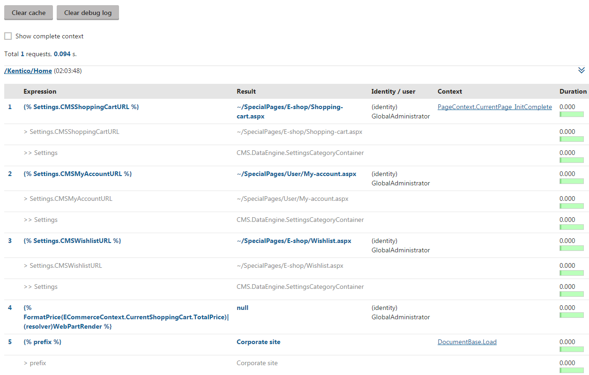

Debugging macros
The macro debug allows you to analyze how the system resolves macros. If you encounter problems with macros not working correctly, the debug can help you:
Confirm when and where your macros are being processed
Identify the exact source of problems
Detect syntax errors
Enabling the macro debug
To use the macro debug, you need to adjust the settings in Settings -> System -> Debug:
|
Setting |
Description |
|
Enable macro debug |
Enables macro debugging and the Macros (K#) tab in the Debug application. |
|
Enable detailed macro debug |
If enabled, the macro debug displays the results of all sub‑elements used within macro expressions. This allows you to check the exact data content of a macro's components during each step of the resolving process. Detailed macro debugging is highly recommended. If disabled, the debug only shows the final result of each macro. You can enable the detailed debug only for specific expressions by adding the |(debug) parameter to the given macro. |
|
Display macro debug on live site |
If enabled, macro debug information is also displayed at the bottom of each live site page. Macro debugging must also be enabled. |
|
Debug macros resolved on UI pages |
If enabled, macros resolved on the pages of the administration interface are also included in the macro debug. Macro debugging must also be enabled. |
|
Log macros to file |
If enabled, the system saves the macro debug log into the logmacros.log file in the ~\App_Data folder. Macro debugging must also be enabled. |
|
Macro debug log length |
Sets the maximum length of the macro debug log, i.e. the number of requests for which the macro debug stores information. If empty, the value of the Default log length setting is used. |
|
Display stack information |
If enabled, the system tracks the code stack when debugging macros and displays the information in the Context column. This information is only available in the debugging UI and on the live site, not in the debug log written into the logmacros.log file. |
Tip: You can also enable macro debugging through the "debug everything" settings in the All section of the Debug settings category.
Debugging macros
To access the macro debug, open the Debug application and select the Macros (K#) tab.
The log displays a list of recent page requests, along with the macros that the system resolved while processing the requests. For each macro, you can see:
The exact Expression
The Result (the value into which the system resolved the macro)
If detailed macro debugging is enabled, you can see the results of all sub-expressions that make up the macro.
An identifier of the macro's author (the user name or identity in the macro signature)
The Context in which the macro was resolved
Click on the method to see the full stack trace.
If you enable the Show complete context option at the top of the interface, the stack trace is displayed for all macros.
The Duration of the resolving process

Viewing the macro debug log
When debugging macros, we recommend using two separate tabs or browsers to:
Adjust the code of your macro
Execute the macro by loading/refreshing the page that contains the expression or triggers the related functionality
To remove all previously logged macro debug data, click Clear debug log.